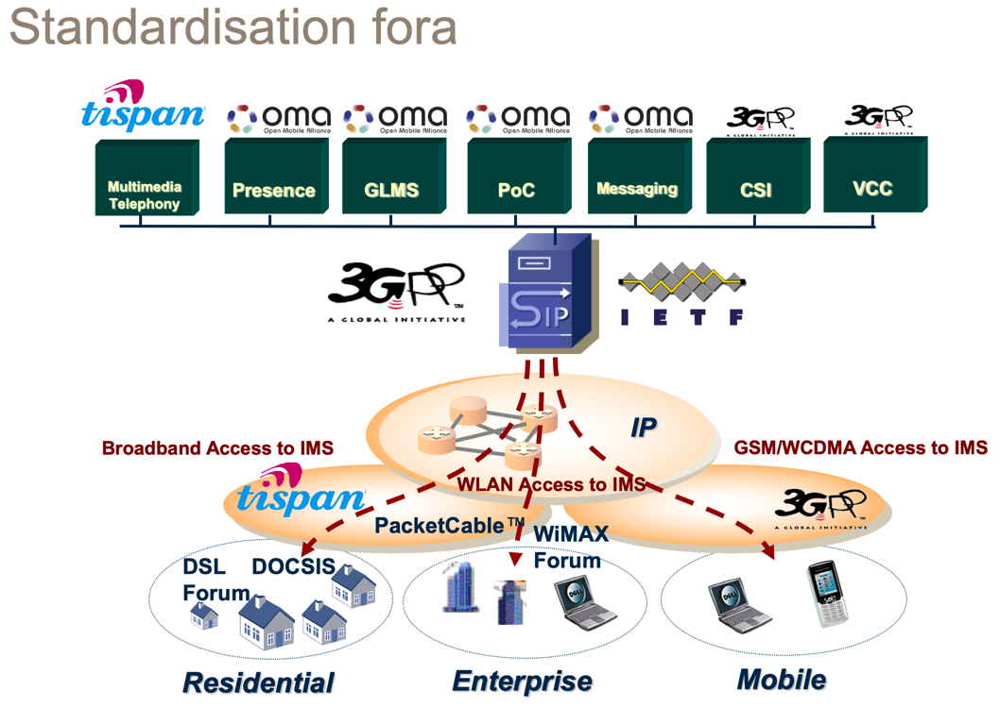
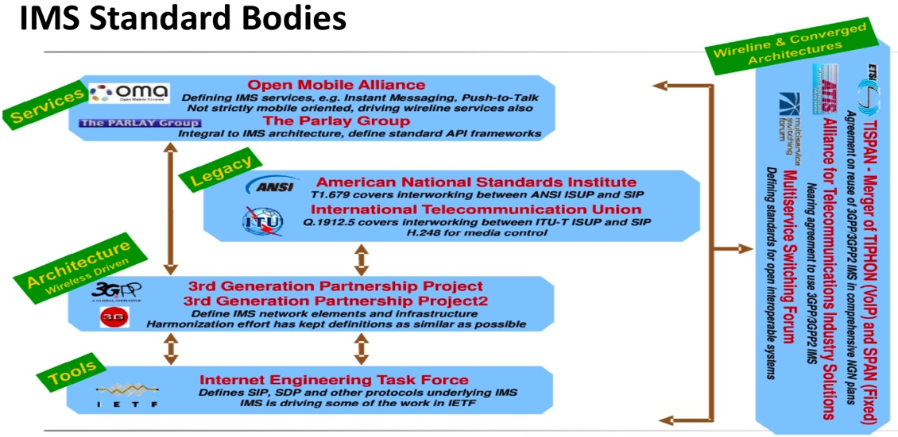

IMS组织关系
此处整理IMS及相关组织和协议的关系：
- 
- 
具体细节是：
IMS- 是
3GPP组织定义的- 利用了现有的各种协议
IETF- 资源定位
URI- 新
- RFC 3986
- 旧：
- RFC 2396
- 新
- 会话控制
SIP- RFC 3261
SDP- RFC 2327
- 授权和认证
- Diameter=Diameter Base Protocol
- 新
- RFC 6733
- 旧
- RFC 3588
- RFC 5719
- 新
- HTTP Authentication: Basic and Digest Access Authentication
- RFC 2617
- 格式：Authorization: Basic
- 格式：Authorization: Basic
- RFC 2617
- Diameter=Diameter Base Protocol
- 实时数据传输
RTP- RFC 3550
- 资源定位
3GPP- TS 23.060
- GPRS
- TS 23.228
- IMS (stage 2)
- TS 24.228
- Signalling flows for the IP multimedia call control based on SIP and SDP
- TS 24.229
- IP multimedia call control protocol based on Session Initiation Protocol (SIP) and Session Description Protocol (SDP), Stage 3
- TS 24.279
- Combining Circuit Switched (CS) and IP Multimedia Subsystem (IMS) services, Stage 3
- TS 25.301
- UTRAN
- TS 29.228
- IP Multimedia (IM) Subsystem Cx and Dx Interfaces; Signalling flows and message contents
- TS 29.229
- UMTS LTE Cx and Dx interfaces based on the Diameter protocol
- TS 23.060
OMA- Instant Messaging using SIMPLE Architecture
- Instant Messaging Requirements
- Instant Messaging using SIMPLE
- Presence SIMPLE Architecture
- Resource List Server (RLS) XDM Specification
- 利用了现有的各种协议
- 是
3GPP=3rd Generation Partnership Project=第三代合作伙伴计划- 是什么：一个组织机构
- 目标：统一各方的电信方面的标准
- 在国际电信联盟的
IMT-2000计划范围内制订和实现全球性的（第三代）移动电话系统规范。 - 致力于
GSM到UMTS(W-CDMA)的演化
- 在国际电信联盟的
- 各方（合作伙伴）包括
- 日本：
ARIB、TTC - 欧洲：
ETSI - 中国：
CCSA - 韩国：
TTA - 美国：
ATIS - 印度：
TSDSI
- 日本：
- 具体制定标准
- 组织形式
TSG=Technical Specification Group=技术规范组WG=Working Group=工作组
- 现状
- 目前有3个
TSG，每个TSG下面又有多个WG- 不过每个
TSG中的每个WG负责不同方面的内容
- 不过每个
- 具体关系
RAN=Radio Access Network- RAN WG1：Radio Layer 1 specification
- RAN WG2：Radio Layer 2 and Radio Layer 3 RR specification
- RAN WG3：Iub Iur and Iu specification – UTRAN O&M requirements
- RAN WG4：Radio performance and protocol aspects (system) – RF parameters and BS conformance
- RAN WG5：Mobile terminal conformance testing
- RAN WG6：GERAN radio and protocol
SA=Service and System Aspects- SA WG1：Services
- SA WG2：Architecture
- SA WG3：Security
- SA WG4：Codec
- SA WG5：Telecom Management
- SA WG6：Mission-critical applications
CT=Core Network and Terminals- CT WG1：MM/CC/SM (lu)
- CT WG2：closed
- CT WG3：Interworking with external networks
- CT WG4：MAP/GTP / BCH/SS
- CT WG5：OSA (Now transferred to OMA)
- CT WG6：Smart Card Application Aspects
- 目前有3个
- 组织形式
3GPP2- 目标：致力于以
IS-95（在北美和韩国应用广泛的CDMA标准，中国电信CDMA与之兼容）向IS-2000过渡 - 说明
- 和高通公司关系更加紧密
3GPP和3GPP2两者实际上存在一定竞争关系
- 目标：致力于以